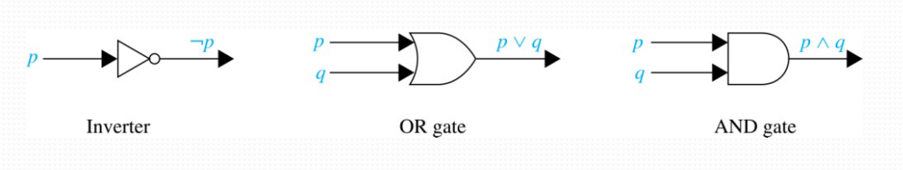
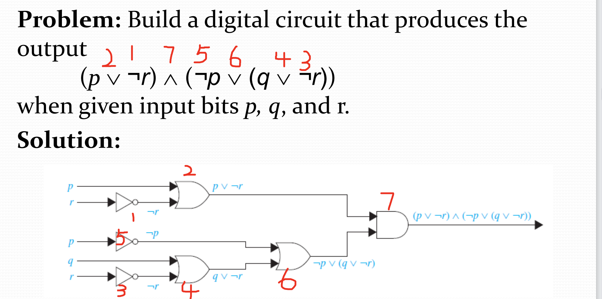
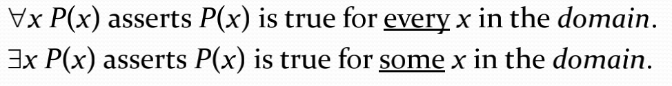

Boolean Searches
| Connective | , |
|---|---|
| AND | 匹配两个都包含的 |
| OR | 匹配包含一个以上的 |
| NOT | 排除一个特定的搜索词 |
举个例子 比如我想搜索universities in New Mexico 就可以用 NEW
ANDMEXICOANDUNIVERSITIES，另外我想搜索apple banana salad 如果我仅仅想要apple 或者 banana 的口味，就可以用APPLEORBANANA, 另外如果我特别讨厌榴莲味的 我们可以用NOTDURIAN。
Logic Circuits

以上是三种普通的逻辑门，我们需要将其与之前学过的命题相联系。例如：

注意我们只需要按照运算符的优先级顺序来绘制电路图即可。
谓词可以看作我们编程的函数，而函数拥有一个参数我们就叫一元谓词，两个参数就叫二元谓词，以此类推。同理，在自然语言中，谓词往往也是充当谓语比如"x is greater than 3"中"is greater than 3"就是谓词成分，x就是Variables(变量)成分.不妨给出一个命题函数的例子。两个常见量词
Universal Quantifier "For all", symbol:
Existential Quantifier "some" symbol:

| Statement | When True | When false |
|---|---|---|
| is true for every x | There is an x for which is false. | |
| There is an for which is true. | is false for every . |
An element for which P(x) is false is called a counterexample(反例) of ∀xP(x).